Pouch: AI Baby Monitor for Early Developmental Disease Detection
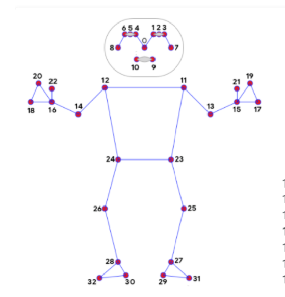
Project Overview
Challenge: Cerebral palsy (CP) describes a group of permanent disorders of movement and posture caused by non-progressive disturbances that occurred in the developing fetal or infant brain. Estimates of CP prevalence vary by country and methodology; many public-health sources report prevalence in the range of approximately 1–3 per 1,000 live births. Early movement differences can be subtle and are often missed by untrained observers.
Why early detection matters: Earlier identification allows earlier access to evidence-based interventions (for example, physiotherapy and developmental therapies), which can improve functional outcomes. Clinical tools such as the General Movements Assessment (GMA) are validated for early screening but require specialized training and are not available at scale.
Solution: Pouch is an AI-powered baby monitor designed to automate validated movement assessments from routine video. By applying machine learning to pose and movement data, the system aims to provide scalable screening and earlier referral to clinicians, complementing (not replacing) clinical assessment and judgment.
Sources: World Health Organization (WHO); Centers for Disease Control and Prevention (CDC); Public Health Agency of Canada; General Movements Trust (GMA overview).
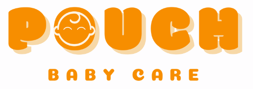
Product Brief
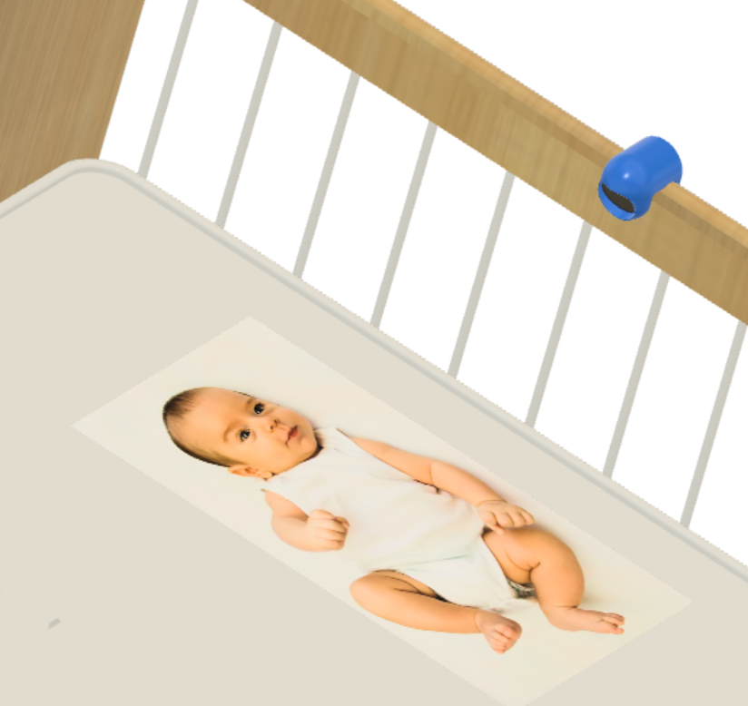
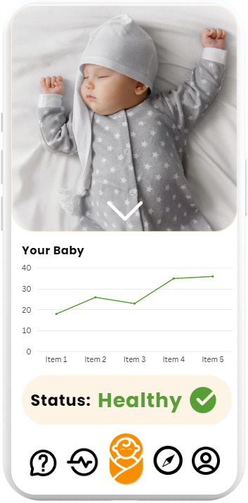
What is it? Pouch is a baby monitor that tracks an infant's growth and development from 1-24 months and identifies early signs of cerebral palsy (CP) and seizures. It consists of a camera mounted to a bassinet or crib and a companion mobile app.
What will it do? The monitor will be installed on a crib and will track the infant's movements in real-time. Pouch then will flag early signs of cerebral palsy and autism so that infants can get immediate diagnosis confirmation from a physician. It will also track infant growth, monitor sleep patterns, and provide temperature tracking.
How does it work? Early markers of cerebral palsy in babies are called cramped synchronized general movements (CSGM)—rigid, spasmodic movements that most parents might interpret as normal infant activity, but which trained medical professionals recognize as potential warning signs. Our AI model is trained on medical-quality videos of these characteristic movements to automatically identify them with high accuracy.
Who is it for? Pouch is designed for parents of newborns and infants (0-24 months) seeking proactive health monitoring. Installation is simple—no technical expertise required—making it accessible to any family.
What makes it different? Pouch would be the first device globally to automatically screen for cerebral palsy and developmental disorders. While other baby monitors focus on sleep, crying, and temperature, Pouch adds critical medical diagnostic capability—transforming routine monitoring into early intervention.
Medical Context & Requirements
The Clinical Challenge
Cerebral palsy is a condition affecting movement and balance. It is the most common motor disability in childhood, affecting approximately 1 in 345 Canadians. Most importantly, brain plasticity is highest in the first 1-2 years of life, making early diagnosis critical for intervention success.
Early symptoms appear as early as 9 weeks old and manifest as specific movement patterns—cramped synchronized general movements and absent fidgety movements. However, these signs are subtle and often missed by untrained observers. Currently, the average diagnosis age is 18 months, potentially months after the optimal intervention window has begun to close.
The difference between diagnosis at 9 weeks vs. 18 months can mean the difference between a child who walks independently and a child who requires a wheelchair for life.
Our Solution Approach
The General Movement Assessment (GMA) is the gold-standard diagnostic test for cerebral palsy screening, but requires specialized medical training. We are automating this assessment using AI—making expert-level screening accessible to every family, every day, 24/7.
Problem Statement
Signs of cerebral palsy in infants are often undiagnosed, as these characteristic movements are not obvious to parents and few doctors are trained in the General Movement Assessment. Infants are then only brought to the doctor later in their life, when parents realize that their child is not meeting important developmental milestones such as walking and sitting. As a consequence, the average age of diagnosis for cerebral palsy is 18 months. Diagnosis at this age compared to diagnosis and treatment when symptoms first start showing up at 9 weeks can make the difference between a person with cerebral palsy being able to walk versus them needing to use a wheelchair or walker for the rest of their life.
Our Solution
There is a need for a more widely available diagnostic tool to detect early signs of cerebral palsy and other developmental diseases. We are developing the first baby monitor that detects signs of cerebral palsy, and hope to eventually expand to autism and infantile seizure detection. Our baby monitor will have all the functional aspects of a regular baby monitor such as recording baby video, sleep monitoring and cry detection, while detecting cramped synchronized movements and absent fidgety movements.
We have developed an LSTM model that detects signs of cerebral palsy with 71% specificity and sensitivity. This is a proof of concept that shows that given more data, we can reach our 90% target.
Design Overview & Technical Architecture
Product Architecture
Our system follows a modular pipeline architecture: video capture → pose tracking → feature selection → ML classification → clinical assessment. This design ensures modularity, allowing each component to be improved independently as our models advance.
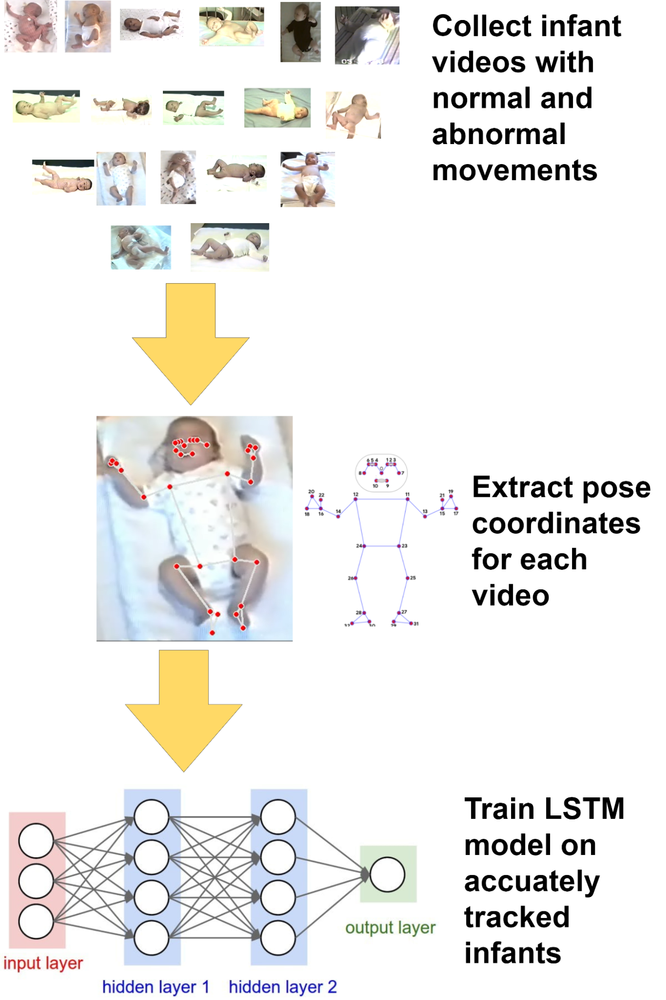
Figure 1: High-level design showing data collection, pose tracking, and LSTM model components.
Our design has three main components:
Data collection and labeling from infant videos
Pose tracking using MediaPipe for movement capture
LSTM neural network to classify normal vs. abnormal movements
Pose Tracking Quality Control
During development, we performed extensive quality control on pose tracking accuracy. Below are examples of poorly tracked poses (left) versus well-tracked poses (right):
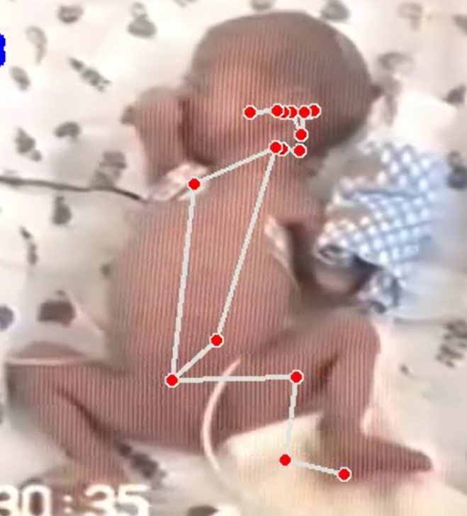
Bad Tracking: Poor pose detection quality
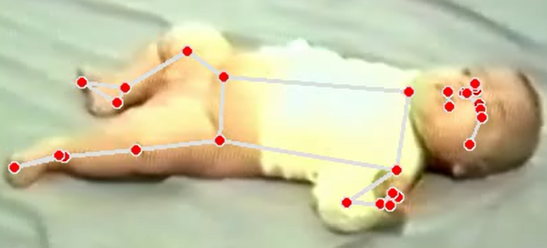
Good Tracking: High-quality pose detection
Key Technologies & Model Selection
🎯 Pose Tracking: MediaPipe
We selected MediaPipe for pose estimation because it performed significantly better on low-resolution videos compared to OpenPose and Movenet. This was critical for infant monitoring where camera quality may be limited. Below are comparisons of pose tracking quality across different models:
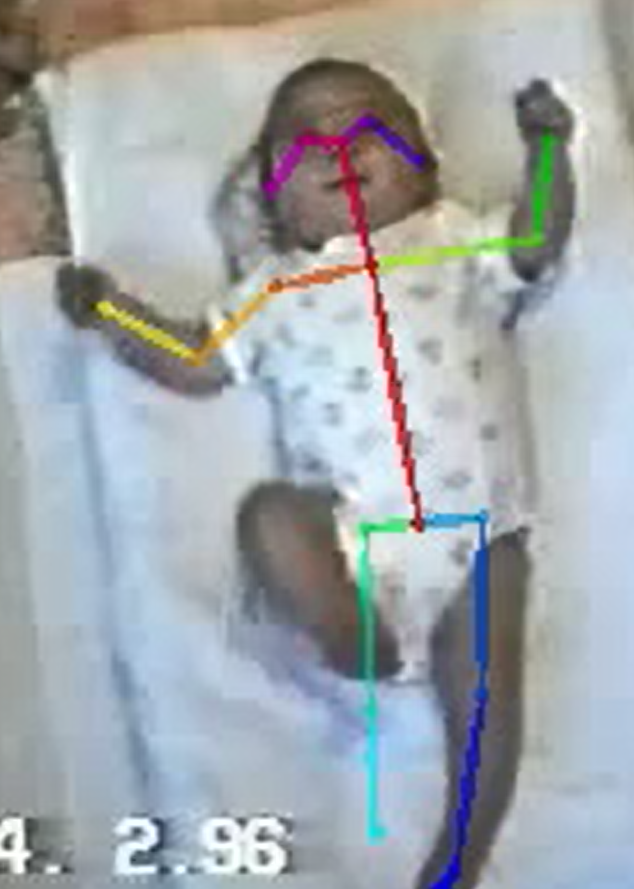
a) OpenPose - Right leg is badly tracked
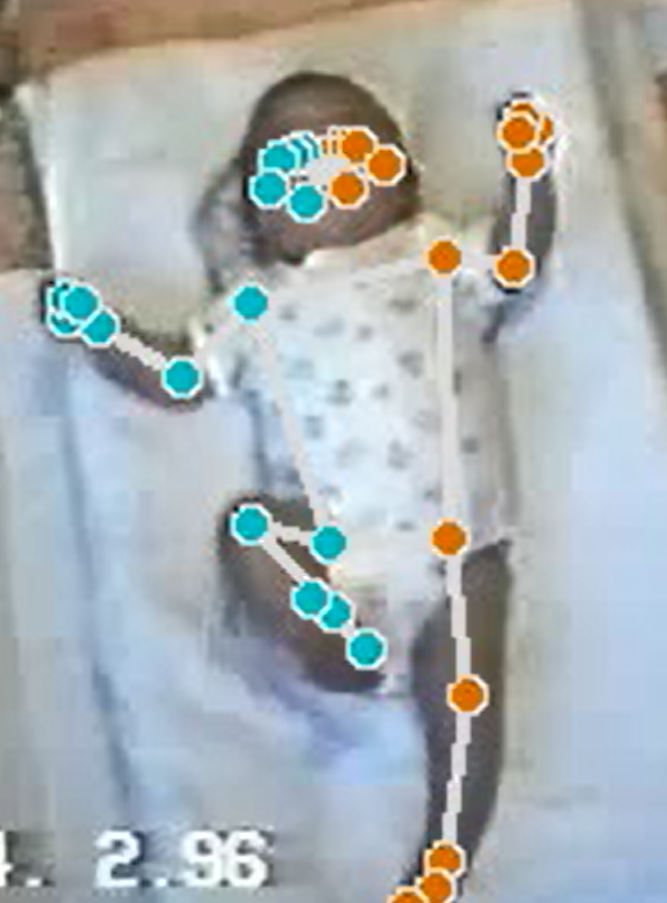
b) MediaPipe - All limbs properly tracked
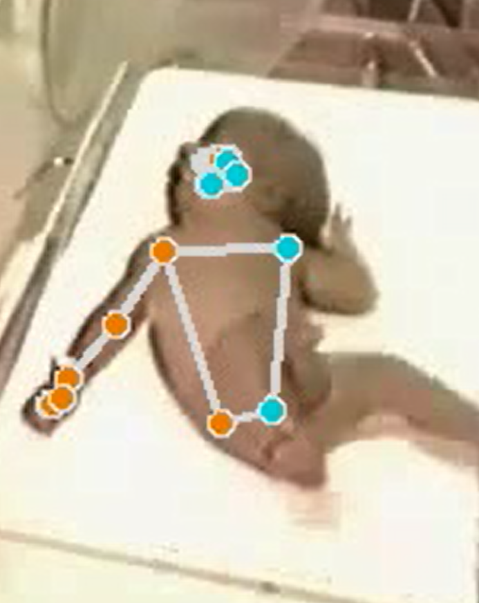
c) MediaPipe - Example of tracking failure on difficult angles
🧠 Machine Learning: LSTM Networks
We implemented Long Short-Term Memory (LSTM) networks to classify movement patterns from sequential pose data. The model was trained on a limited dataset of infant videos labeled by medical professionals, achieving 71% specificity and sensitivity as a proof-of-concept. This demonstrates that with more training data, we can reach our target of 90% accuracy.
⚙️ Data Processing Pipeline
We perform feature selection on 6 key limbs (left/right wrist, foot, and elbow) to reduce overfitting and improve model efficiency. MediaPipe provides 33 landmark points on the infant's body:
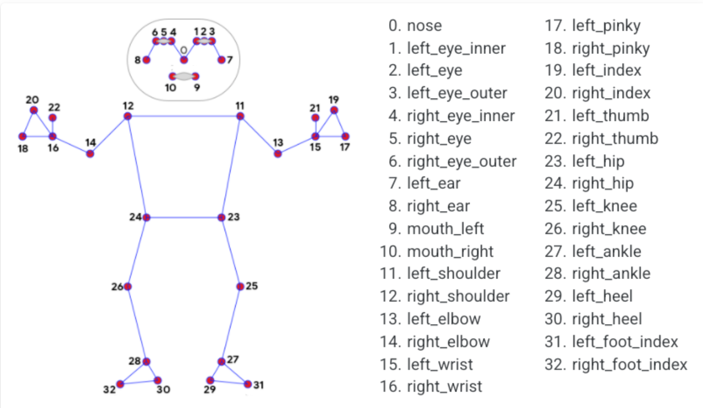
Figure 4: Pose estimation landmark points from MediaPipe
Processing Steps: Videos are segmented into 10-second clips and normalized before being fed to the model:
Raw coordinate extraction from video frames
Low-pass filtering to remove noise
Normalization for LSTM input
Data Transformation Example: Here's how we transform a cerebral palsy positive infant's movement data:
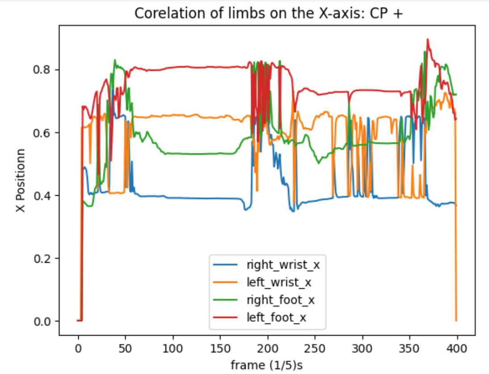
Raw Data: Left/right feet and wrist coordinatesFiltered: After low-pass filtering
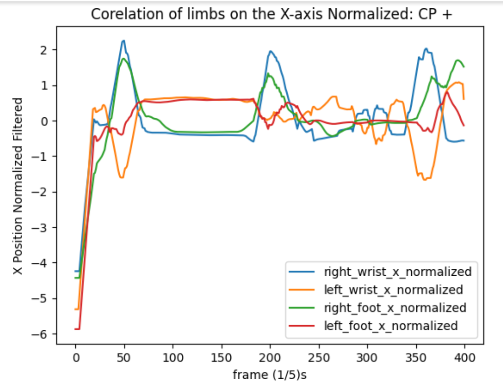
Normalized: Ready for model input
Larger movements are characteristic in CP+ infants
Greater synchronicity between left and right limbs in CP+ cases
Left/right wrists and feet move together synchronously in CP+ (abnormal pattern)
Hardware Prototype Implementation
We developed a hardware prototype using a Jetson Nano 4GB developer kit with an infrared camera for low-light detection capability. The live detection pipeline achieves 7-14 frames per second on standard laptops, making real-time monitoring feasible for home use.
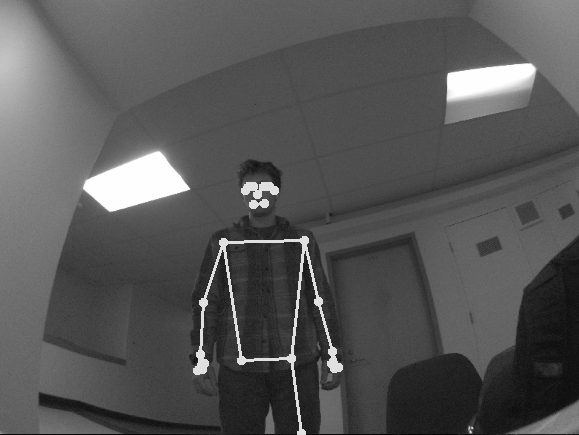
Figure 6: MediaPipe pose tracking with Jetson Nano IR camera for low-light infant monitoring
Verification & Validation Results
Clinical Model Performance (Leave-5-Out Validation)
We used a leave-5-out cross-validation approach on 52 infant videos (26 normal, 26 cerebral palsy) to validate our LSTM model:
Average Training Accuracy: 93.4%
Average Validation Accuracy: 92%
Average Test Accuracy: 96%
Live Detection Performance
In live testing on demo day with real-time video input:
True Negative Rate: 71.4% (correctly detecting normal movement)
Test Dataset: 42 videos (14 CP+, 28 CP-)
Extended Model Validation: Dance Recognition
To validate that our LSTM architecture could achieve higher accuracy with more training data, we trained a secondary model on 750 videos of dance movements (Gangnam Style, Under the Sea, and no dance). This model achieved 100% accuracy on diverse participants at different angles and distances (0.5-3 meters from camera)—proving that our architecture is sound and will scale with larger infant datasets.
This finding is critical: It demonstrates our model's capacity to reach 90%+ clinical accuracy once we collect sufficient labeled infant data.
Figure 7: Dance model validation showing 100% classification accuracy across three movement classes (Gangnam Style, Under the Sea, No Dance) with diverse participants, camera angles, and body positions.
IP Strategy & Market Position
Competitive Landscape & Related IP
The baby monitor market includes several existing products (BabbyCam, Nanit Pro), but none focus on developmental disease detection. The general concept of baby monitors (since 1937) has limited patent protection. We identified one active US patent (US10565846B2) for crying/sleep detection, which could limit certain feature sets in the US market.
Our IP Protection Strategy
Our most defensible asset is proprietary data. Our multi-pronged approach includes:
General Movement Assessment License: Obtain a license from the General Movements Trust for clinical assessment methodology
Patent Strategy: File dependent patent claims under existing video monitoring patents for our novel detection algorithms
Proprietary Datasets: Build a large proprietary dataset from customer deployments and research partnerships (e.g., Dr. Edmund Ho, UBC Hospital)
International Expansion: Expand to Canada, Europe, and China where US patents have limited jurisdiction
Next Steps & Future Work
Our development roadmap focuses on scaling the model, deploying to real-world settings, and pursuing regulatory approval. Key milestones include:
Data Expansion (Q1-Q2 2024): Partner with medical institutions to collect 500+ videos each of CP+ and CP- infants to reach our 90% specificity/sensitivity target
Free Diagnostic Web App (Q3 2024): Launch a publicly available app to gather crowdsourced infant movement data for diagnosis verification and model refinement
Hardware Deployment (Q4 2024): Deploy Jetson Nano-based prototype on cribs in clinical settings for real-world validation and pediatric feedback
FDA Approval (2025): Pursue FDA Class I clearance for commercial baby monitor launch in the United States
Model Architecture Upgrade: Transition from LSTM to Transformer architecture when computational constraints allow, enabling multi-disease detection
Feature Expansion: Extend detection to autism spectrum and infantile seizures using the same modular architecture